Danmarkskortet
På en bærbar. Før: 8 værktøjer, dato og lag fremme, mærkater oven på kortet. Efter: tre trin, søgefelt, klik = opslag. Resten bag «Flere værktøjer».
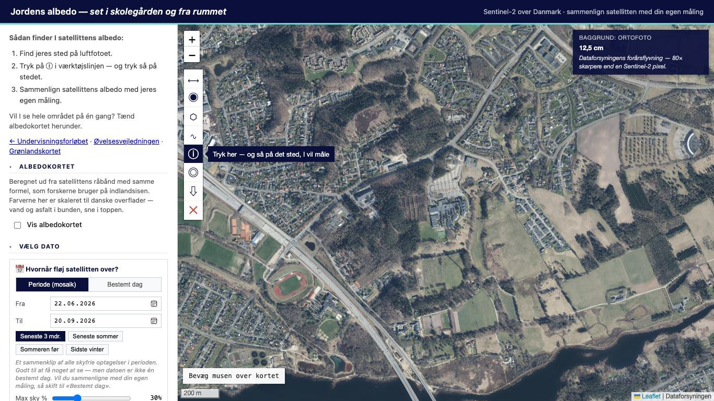
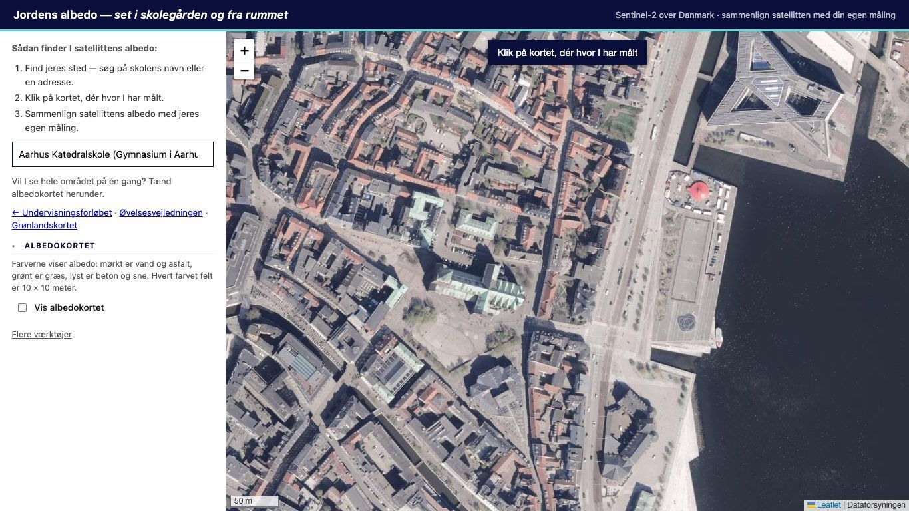
Danmarkskortet — opslaget
Før med albedolaget tændt: scene-log, «SATELLIT-LAG AKTIVE» og Liang-formlen ligger oven på kortet.
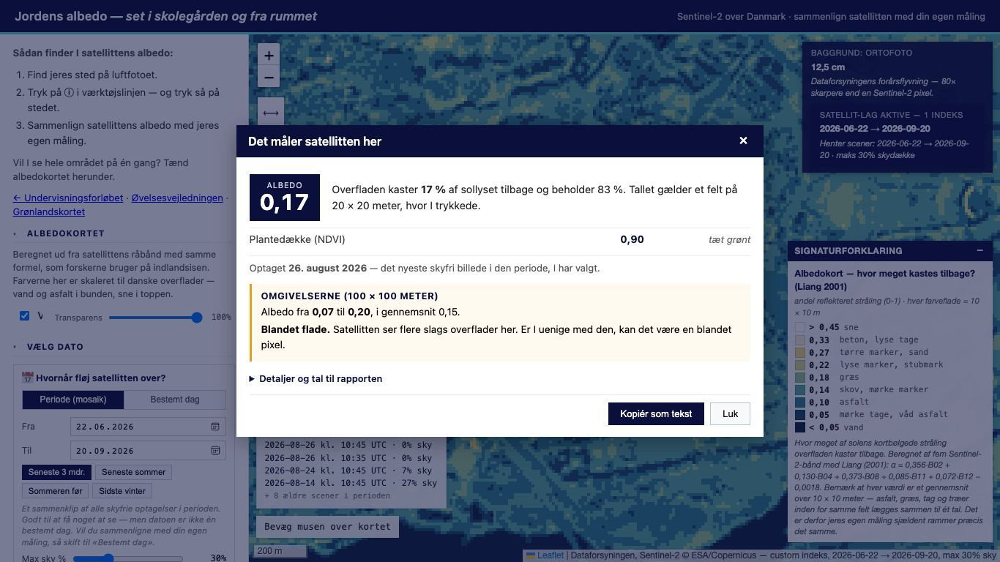
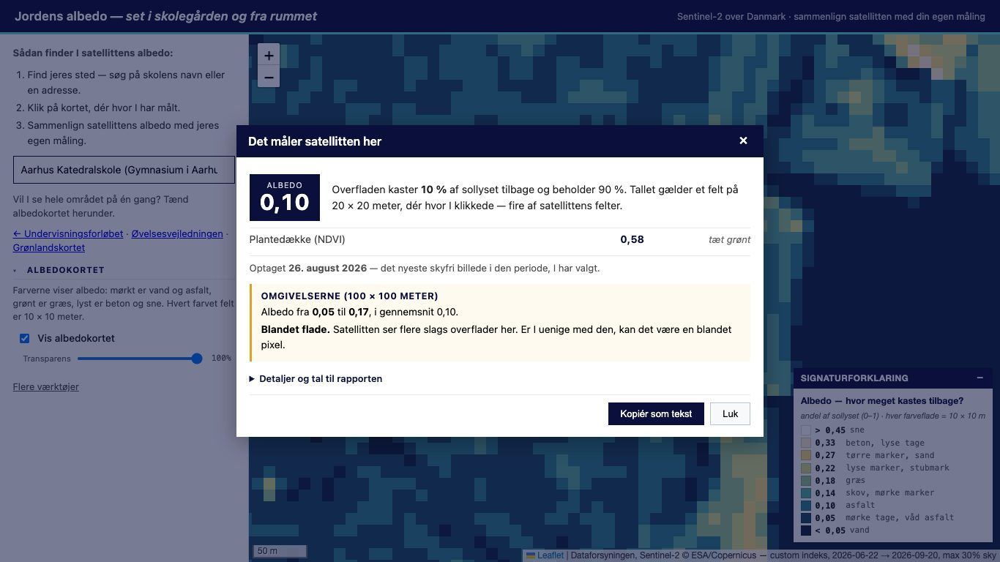
Danmarkskortet — «Flere værktøjer» slået til
Alt det gamle findes stadig — ét klik væk. Instance-boksen vises ikke længere.
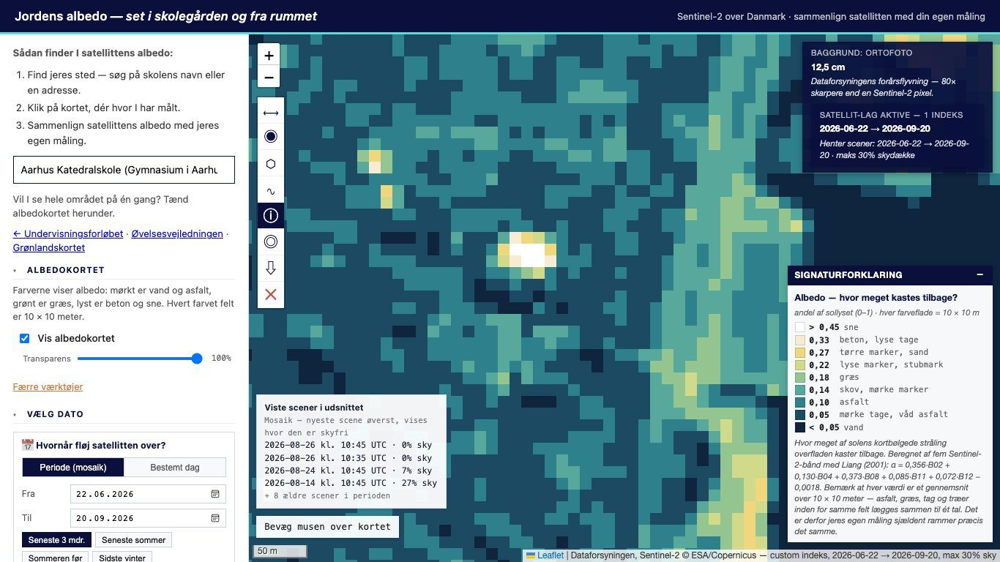
Grønlandskortet
Før: «Validation-GIS», instance-boks øverst, sommeren 2024, ingen opgave. Efter: en opgave i tre trin, kun ⓘ, albedokortet øverst, åbner på 7. august 2026.
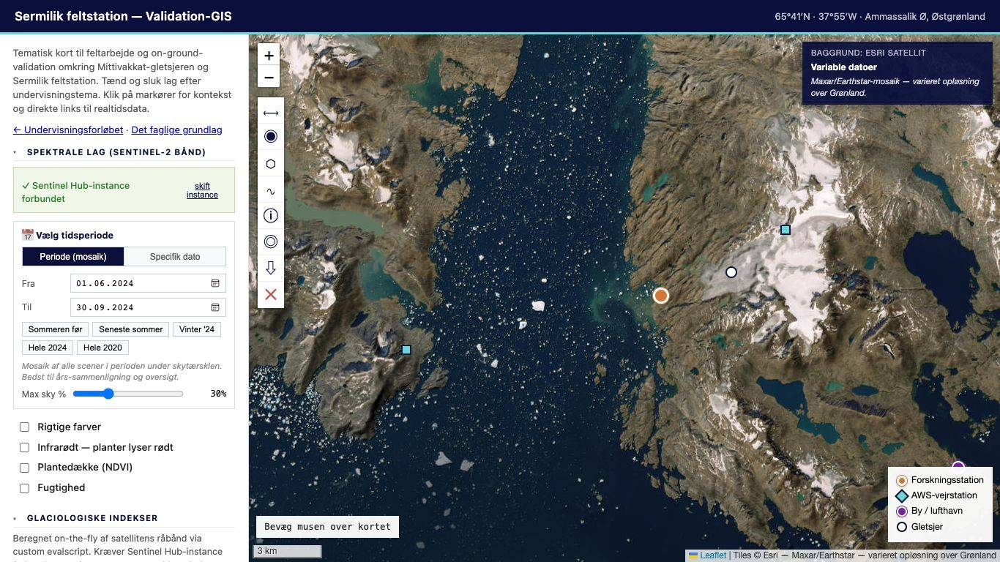
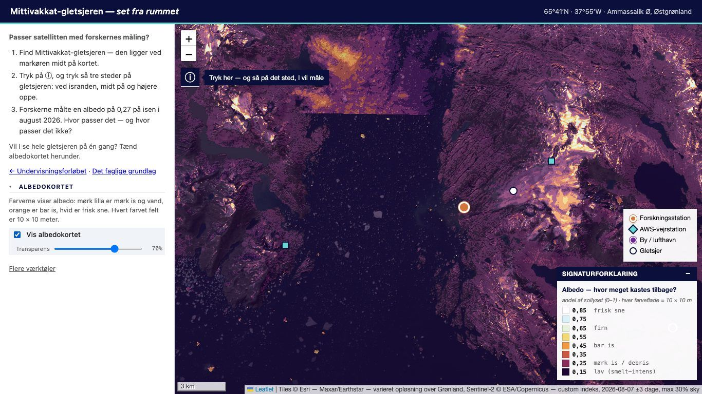
Albedo-appen (mobil)
Før: 18 betjeningselementer efter en måling, to knapper der gør det samme, «Måleområde 2». Efter: tre knapper, hurtigvalg til navne og «Mine målinger» på tværs af fotos.
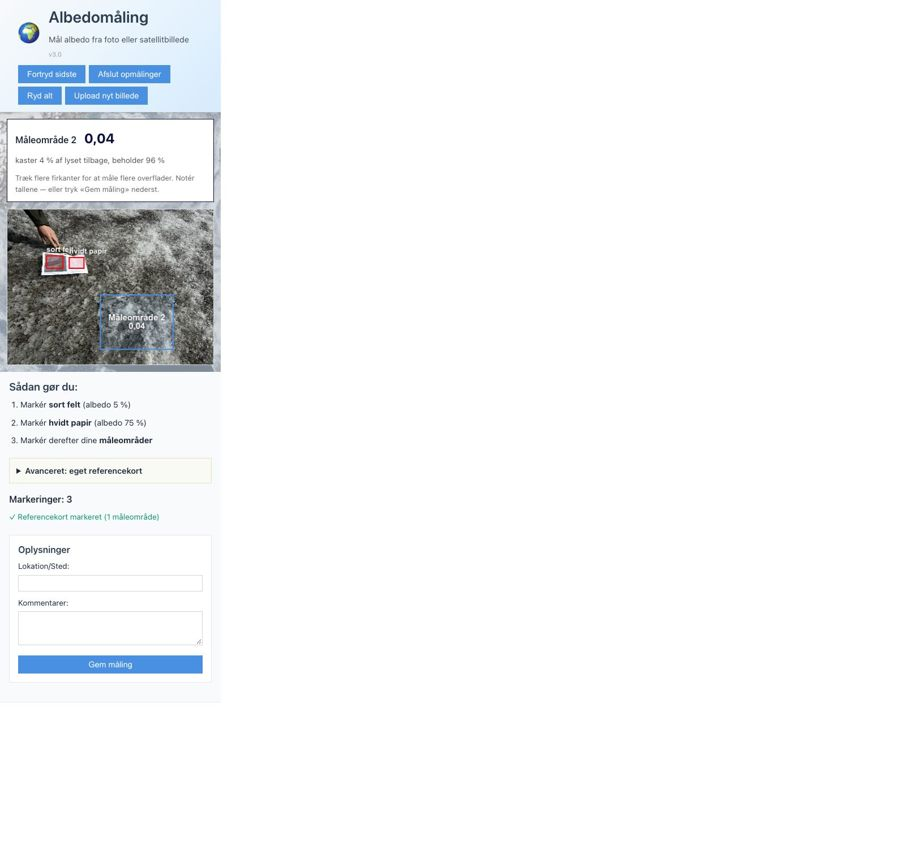
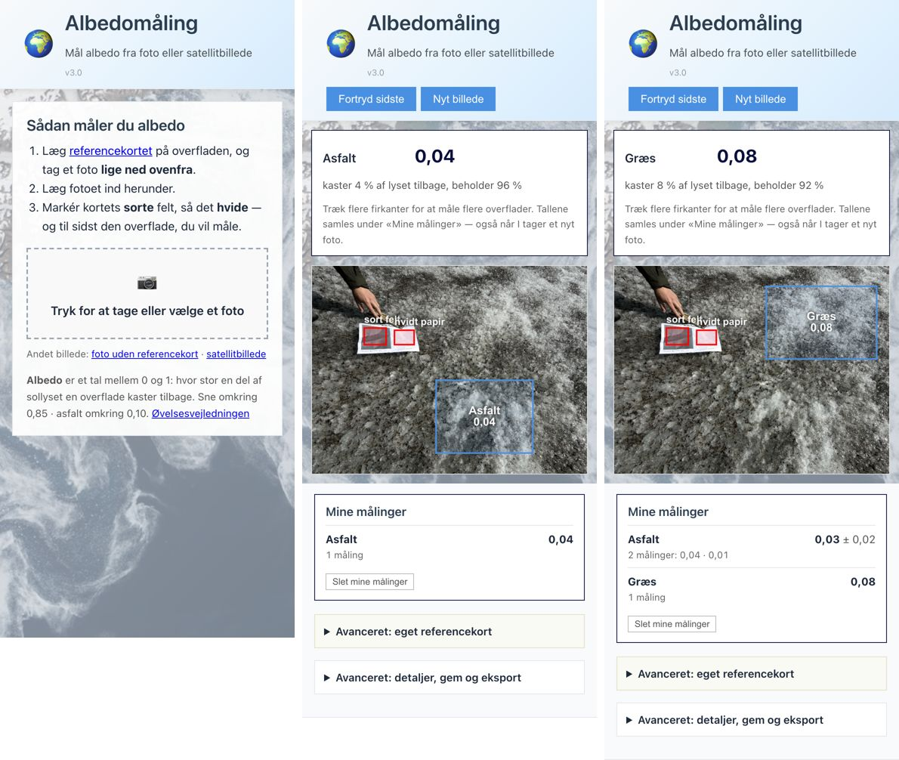
Elevarket
Før: 1.820 ord, 5 + 2 A4-sider, facit under opgaven. Efter: 733 synlige ord, 3 A4-sider, én tur ud, opdagelserne i en fold. Udvidelsen har sin egen side.
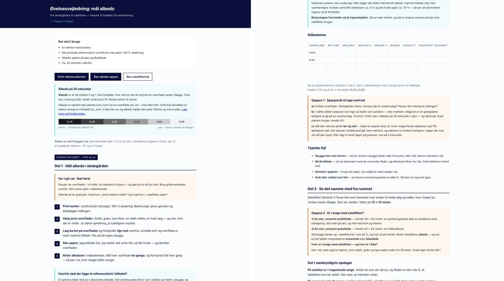
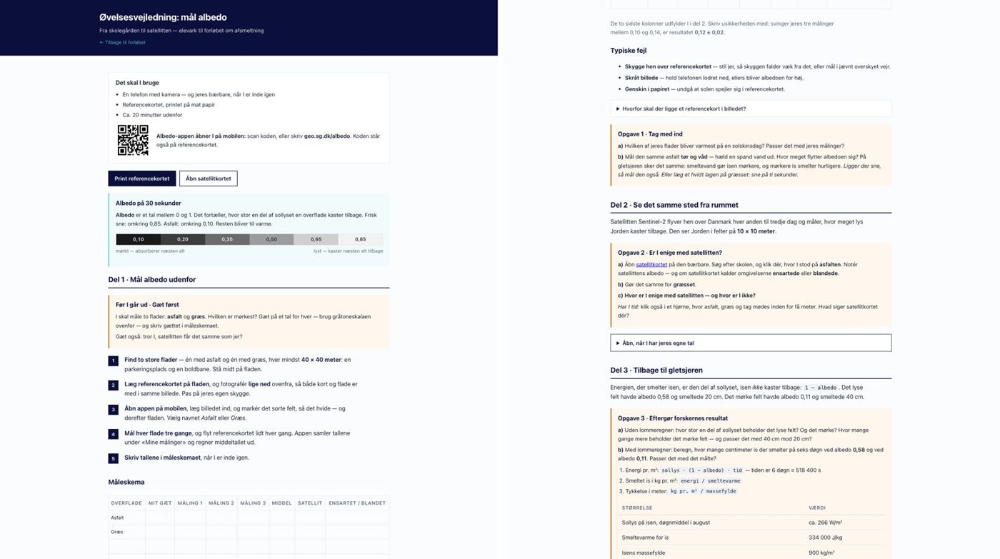
Forløbssiden
Før: forklaringen om græsset står før målingen. Efter: kun spørgsmålet — svaret ligger i folden «Åbn, når I har slået jeres egne tal op». Videoen er rykket op i casen.
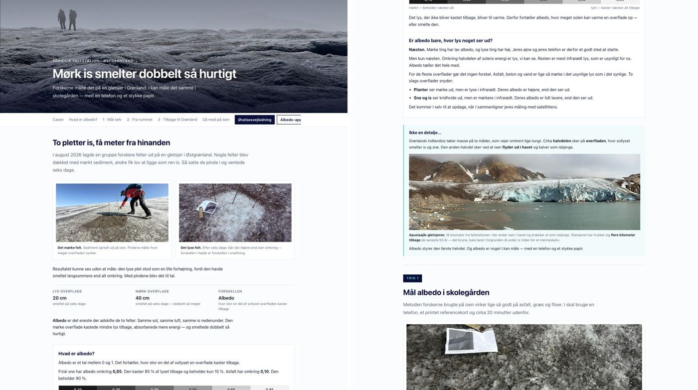
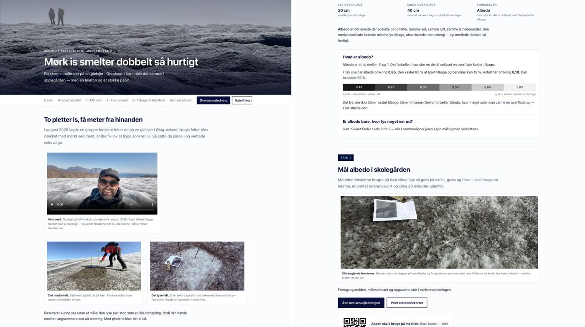
Forløbssiden — folden åbnet
«Derfor var I uenige om græsset» — din forklaring, nu som svar og ikke som varsel.
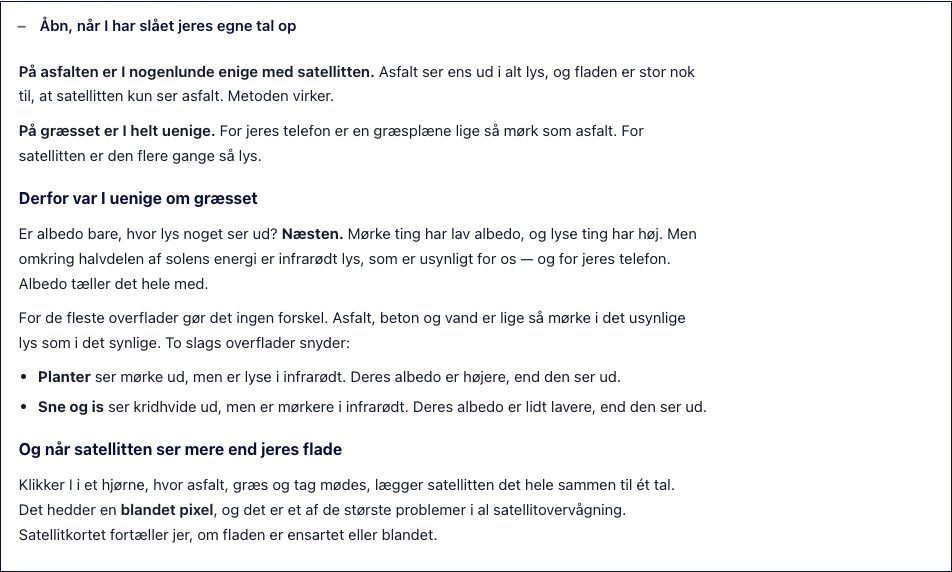
Lærervejledningen
Før: 1.364 ord i ét stræk, «Når det går galt» efter facit. Efter: Før timen, Tidsplan og Når det går galt først (554 ord); resten foldet og foldes ud ved print.
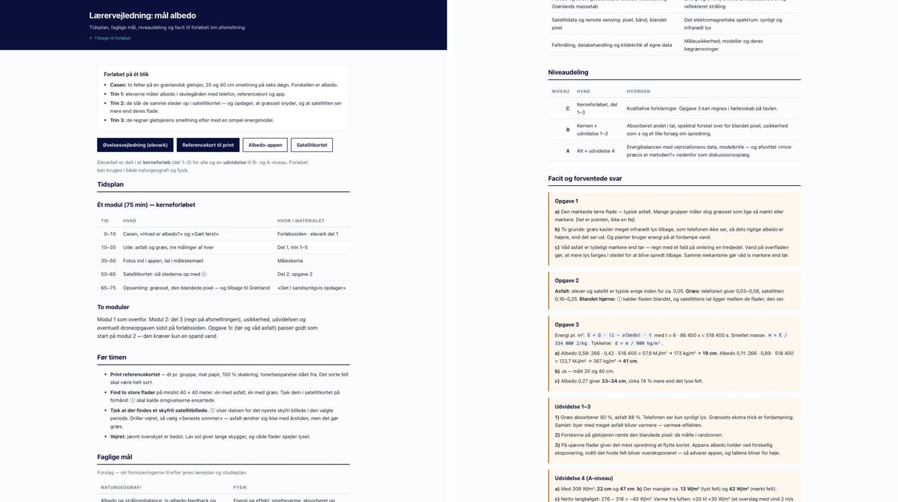
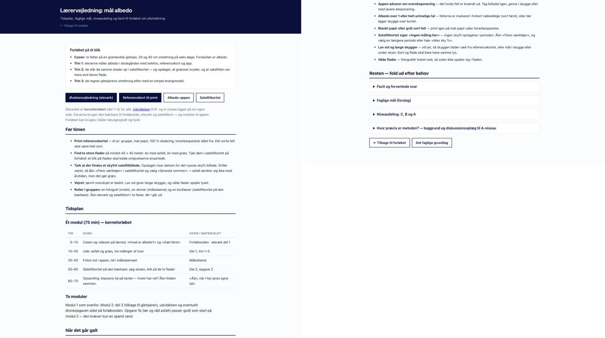
Referencekortet
QR-kode til appen på forsiden — det er det eneste, eleverne har med ud. Stadig 2 sider.
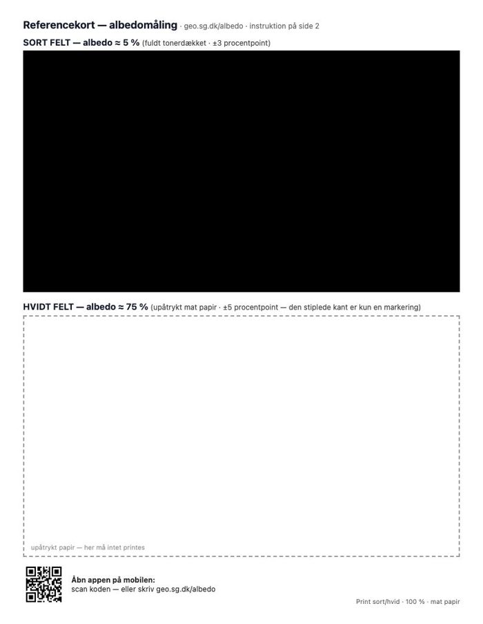